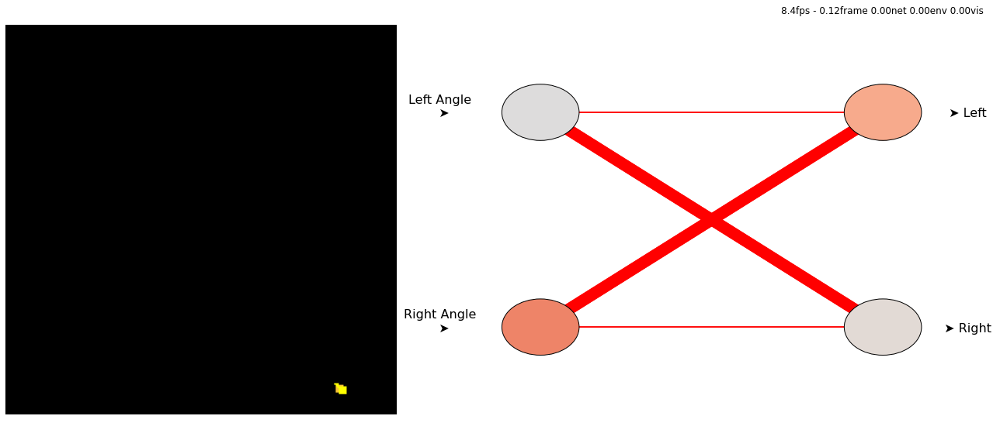

Reinforcement learning with spiking neural networks¶

# @title Install prerequisites
#!pip3 install matplotlib gym --quiet
#!pip3 install git+https://github.com/norse/norse --quiet
#!pip3 install git+https://github.com/ncskth/norse-rl --quiet
%matplotlib inline
#%config InlineBackend.close_figures=False
# Setup environment
import gym
import norse_rl
env = gym.make("Gridworld-v0")
# Setup simulation
from norse_rl import simulate
simulation = simulate.Simulation(env)
run = simulation.run
# Import neuron simulator
import torch
import norse.torch as norse
from norse_rl.util import Linear
---------------------------------------------------------------------------
ImportError Traceback (most recent call last)
/tmp/ipykernel_896732/2956437680.py in <module>
13
14 # Setup simulation
---> 15 from norse_rl import simulate
16 simulation = simulate.Simulation(env)
17 run = simulation.run
ImportError: cannot import name 'simulate' from 'norse_rl' (/home/jens/norse-rl/.venv/lib/python3.8/site-packages/norse_rl/__init__.py)
w = [ [ 1, -1 ]
, [ 0.2, 1 ] ]
model = norse.SequentialState(
norse.LIFCell(),
Linear(2, 2, w),
norse.LICell(),
)
run(model)
